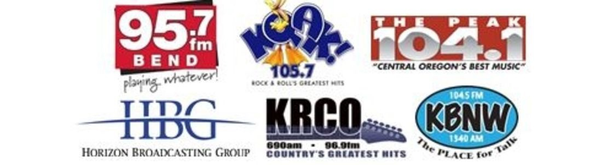

KQAK is a classic hits radio station in Bend, Oregon. Our program consists of music from Elton John, Journey, Fleetwood Mac, Michael Jackson, Billy Joel, Pat Benatar, Madonna, Daryl Hall and John Oates, and Prince. We are owned by Horizon Broadcasting Group.
